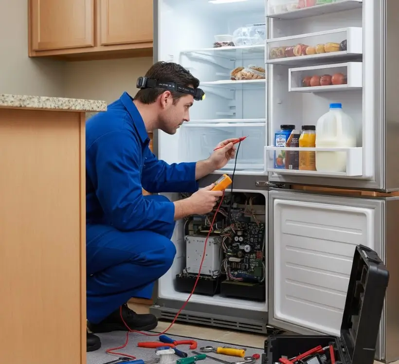

نصائح موسمية لصيانة وإصلاح الثلاجات
دليل عملي للعناية بالثلاجة قبل الصيف والشتاء، واكتشاف العلامات التي تستدعي الفحص الفني قبل أن يتحول العطل إلى مشكلة أكبر.
الثلاجة من أكثر الأجهزة المنزلية اعتمادًا على التشغيل المستمر، ولذلك يمكن أن تتأثر كفاءتها بدرجة حرارة المكان وطريقة الاستخدام ونظافة أجزاء التهوية. الصيانة الموسمية تساعدك على متابعة الجهاز بصورة منتظمة بدل انتظار التوقف المفاجئ.
وفي هذا الدليل من أرشيف التوكيل للصيانة، نوضح أهم النقاط التي تستحق المراجعة مع تغير الفصول، وما يمكنك فحصه بنفسك بأمان، ومتى يكون تدخل فني متخصص هو الاختيار الأفضل.
ما تستناش العطل يكبر
لو لاحظت ضعف تبريد، تشغيلًا مستمرًا للموتور، تسريب مياه أو أصواتًا غير معتادة، اطلب فحص الثلاجة لمعرفة السبب بدل تغيير قطع بدون تشخيص.
اطلب فحص الثلاجةدليلك لصيانة الثلاجة قبل دخول الصيف
مع ارتفاع حرارة الجو، تصبح عملية التخلص من الحرارة خارج الثلاجة أكثر تحديًا، خصوصًا إذا كانت منطقة المكثف مليئة بالأتربة أو كانت التهوية حول الجهاز غير كافية. لذلك من المفيد إجراء مراجعة موسمية قبل فترات الحر الشديد.
أهم إجراءات ما قبل الصيف
- تنظيف منطقة المكثف والتهوية: افصل الكهرباء أولًا، وإذا كان الوصول إلى المكثف متاحًا وفق تصميم الجهاز، أزل الأتربة المتراكمة برفق.
- فحص جوان الأبواب: تأكد من أن الجوان نظيف وسليم وأن الباب يغلق بإحكام دون تسريب واضح للهواء.
- مراجعة إعدادات الحرارة: استخدم إعدادًا مناسبًا للموديل وفق توصيات الشركة المصنعة، ولا تجعل الجهاز على أقصى تبريد دون حاجة.
- توفير تهوية مناسبة: اترك المسافات التي توصي بها الشركة المصنعة حول الثلاجة، ولا تحاصر فتحات التهوية بالأثاث أو الأدوات.
كيف تتعامل مع الثلاجة في الشتاء؟
انخفاض حرارة المكان قد يغير طريقة عمل الثلاجة، خاصة إذا كانت موجودة في مكان شديد البرودة. لذلك لا تعتمد على إعدادات الصيف بشكل تلقائي طوال العام؛ راقب أداء الجهاز ودرجة حرارة الطعام واضبط الإعدادات وفق دليل الموديل.
إذا لاحظت تجمد الطعام داخل قسم التبريد أو تغيرًا واضحًا في دورة تشغيل الجهاز، فالأفضل مراجعة الإعدادات أولًا، وإذا استمرت المشكلة اطلب فحصًا متخصصًا.
لماذا الصيانة الوقائية مهمة؟
الهدف من الصيانة الوقائية ليس فتح الجهاز وتغيير قطع بشكل عشوائي، وإنما اكتشاف مؤشرات الخلل في وقت مبكر. تلف جوان الباب، تراكم الأتربة، ضعف التهوية أو مشكلة في المروحة قد تجعل الجهاز يعمل بصورة غير طبيعية، ومع استمرار المشكلة قد تتأثر مكونات أخرى.
الفحص الفني عند ظهور أعراض مستمرة يساعد على تحديد السبب الحقيقي قبل اتخاذ قرار الإصلاح، ويقلل احتمالية إنفاق المال على قطعة لا تعالج أصل المشكلة.
فحص المكثف والمروحة: لماذا يستحق الاهتمام؟
المكثف جزء أساسي من منظومة التخلص من الحرارة. وعندما تتراكم الأتربة على منطقة التهوية، يصبح التخلص من الحرارة أصعب. بعض الثلاجات تحتوي أيضًا على مروحة مرتبطة بمنظومة التبريد، وأي صوت غير معتاد أو توقف واضح في عملها يستحق الفحص.
خطوات بسيطة وآمنة للمستخدم
- افصل الكهرباء قبل تنظيف أي جزء خارجي يمكن الوصول إليه.
- أزل الأتربة برفق باستخدام وسيلة تنظيف مناسبة دون ثني أو إتلاف الملفات.
- راجع التهوية وتأكد من عدم وجود أشياء تحاصر ظهر أو جوانب الجهاز.
- لا تفك المكونات الداخلية إذا كان الوصول إليها يتطلب فتح الدائرة الكهربائية أو دائرة التبريد.
أخطاء يومية قد تقلل من كفاءة الثلاجة
- وضع الثلاجة ملاصقة للحائط دون الالتزام بمسافات التهوية الخاصة بالموديل.
- وضع أطعمة ساخنة جدًا داخل الثلاجة مباشرة.
- ترك الباب مفتوحًا لفترات طويلة أو تكرار فتحه دون حاجة.
- تجاهل تلف جوان الباب أو وجود فجوة واضحة عند الإغلاق.
- تكديس الطعام أمام فتحات توزيع الهواء داخل الثلاجة.
- محاولة إصلاح أعطال الكهرباء أو دائرة التبريد بدون خبرة وأدوات مناسبة.
كيف يؤثر الطقس على تشغيل الثلاجة؟
في الأجواء الحارة، تحتاج الثلاجة إلى التخلص من حرارة أكبر إلى المكان المحيط، ولذلك تصبح التهوية والنظافة حول المكثف أكثر أهمية. أما في الأماكن شديدة البرودة، فقد تتغير دورة التشغيل بحسب تصميم الجهاز وحساساته ومكان وضعه.
لهذا السبب، اختيار مكان مناسب للثلاجة ومتابعة أدائها مع تغير الفصول جزء مهم من العناية بها.
متى تحتاج إلى فني صيانة ثلاجات؟
اطلب فحصًا متخصصًا إذا توقفت الثلاجة عن التبريد، أو أصبح الموتور يعمل بصورة مستمرة، أو ظهر تسريب مياه متكرر، أو تراكم الثلج بصورة غير طبيعية، أو ظهرت أصوات جديدة ومزعجة.
كما يفضل عدم محاولة التعامل بنفسك مع تسريب غاز التبريد أو الكمبروسر أو الدوائر الكهربائية الداخلية؛ هذه الأعمال تحتاج إلى تشخيص وأدوات فنية مناسبة.
خلي الثلاجة جاهزة لكل موسم
التوكيل للصيانة يقدم خدمات صيانة وإصلاح الأجهزة المنزلية، مع إمكانية طلب زيارة منزلية، أو الاستفسار عن استقبال الجهاز في مقر الشركة بحسب طبيعة الحالة.
احجز أو استفسر الآنأسئلة شائعة
هل يجب تغيير إعدادات الثلاجة مع كل فصل؟
ليس بالضرورة. الإعداد المناسب يعتمد على نوع الجهاز والموديل ودرجة حرارة المكان. الأفضل الالتزام بإعدادات الشركة المصنعة ومراقبة أداء الجهاز بدل تغيير الإعدادات عشوائيًا.
متى يجب تنظيف المكثف؟
تختلف الفترة حسب تصميم الثلاجة وبيئة المنزل. إذا كان المكان مليئًا بالأتربة أو الشعر أو الغبار، فقد تحتاج منطقة التهوية إلى متابعة أكثر انتظامًا. اتبع تعليمات الموديل عند توفرها.
ما سبب تجمع المياه داخل الثلاجة؟
قد يرتبط الأمر بانسداد مسار تصريف المياه أو مشكلة في طريقة تصريف التكثف، وقد تكون هناك أسباب أخرى حسب الموديل. إذا تكرر الأمر، يفضل الفحص بدل الاكتفاء بمسح المياه.
هل وضع الثلاجة بجانب الفرن يؤثر عليها؟
مصادر الحرارة القوية بجوار الثلاجة قد تزيد الحمل الحراري على الجهاز. لذلك يفضل اختيار مكان جيد التهوية وبعيد عن مصادر الحرارة المباشرة، مع الالتزام بمسافات التركيب الموصى بها.
متى أطلب فنيًا بشكل عاجل؟
عند توقف التبريد، أو ظهور تسريب مستمر، أو سخونة غير معتادة مصحوبة بمشكلة في الأداء، أو أصوات قوية جديدة، أو أي علامة كهربائية غير طبيعية، اطلب فحصًا متخصصًا ولا تحاول إصلاح الدائرة الداخلية بنفسك.
الثلاجة عندك فيها مشكلة؟
أرسل نوع الثلاجة والماركة والموديل إن أمكن، مع وصف العطل، وسنبدأ من التشخيص الصحيح قبل اتخاذ قرار الإصلاح.
احجز أو استفسر الآنهل تواجه مشكلة أو عطلاً في جهازك؟
تواصل مع فريق "التوكيل للصيانة" الآن للحصول على استشارة فنية وفحص منزلي فوري بأعلى معايير الدقة والأمان.